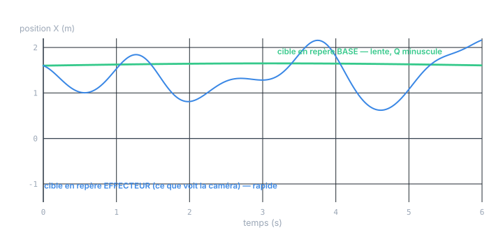
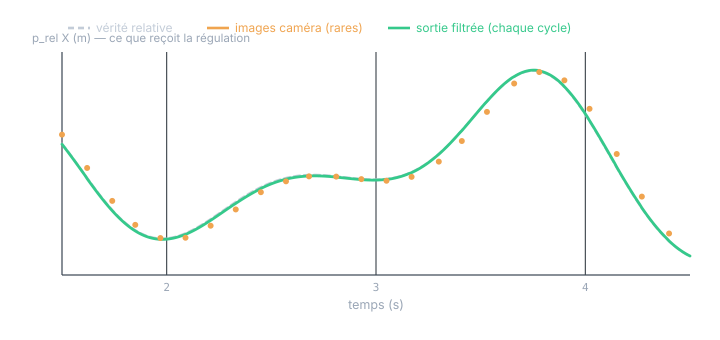
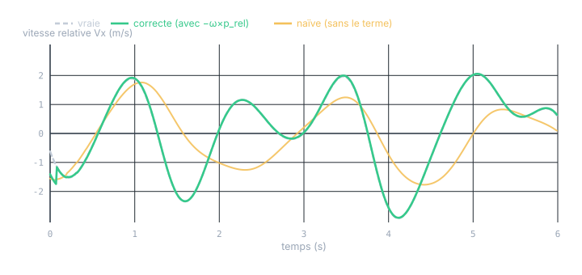

Chapitre 15 · Application
Caméra lente + cinématique robot : choisir le repère d'état
Objectifs du chapitre
- Comprendre pourquoi filtrer la pose relative directement est une fausse bonne idée.
- Poser le principe : estimer là où l'inconnu est le plus lent — le repère base.
- Utiliser la cinématique effecteur comme transformation déterministe (déprojection + recomposition), pas comme bruit à filtrer.
- Gérer l'asynchronisme et la latence par un buffer horodaté.
- Ne pas oublier le terme de repère tournant −ω×p_rel dans la vitesse relative.
1. Le faux réflexe : filtrer le relatif
La caméra sort une pose relative (cible vue depuis l'effecteur). Le réflexe est de filtrer cette pose relative directement. C'est le piège. Cette pose relative varie vite — mais son mouvement rapide vient à 99 % de l'effecteur lui-même, dont on connaît exactement le déplacement (CD + Jacobien). Filtrer le relatif, c'est demander au filtre d'absorber, via un gros Q, un mouvement qu'on connaît déjà parfaitement : filtre nerveux, en retard, et bruité pour rien.
Règle d'or de la fusion : ne filtre jamais ce que tu connais déjà. Le mouvement de l'effecteur est connu — il doit sortir du filtre et devenir une transformation déterministe. Ce qui reste à estimer, c'est seulement la partie inconnue : où est la cible.
2. Le principe : estimer là où l'inconnu est lent
La même cible a deux dynamiques opposées selon le repère où on la regarde.

D'où la décision : l'état est la pose de la cible dans le repère base (stabilisé, fixe). Comme la cible y est lente — c'est votre hypothèse « dynamique cible faible devant celle du système » — un modèle à vitesse constante avec un tout petit Q suffit, et le filtre reste serré même entre deux images éloignées.
3. La structure : la cinématique en transformation déterministe
La cinématique effecteur (connue chaque cycle) intervient à deux endroits, en entrée et en sortie du filtre — jamais dedans.
![Schéma. Dans un OB cyclique rapide, un KF linéaire dont l'état est la pose cible en repère base. En entrée, la caméra asynchrone passe par un bloc déprojection z_base avant de corriger le KF. Le bloc CD+Jacobien fournit p_eff, v_eff, θ, ω chaque cycle : la pose à l'instant de capture alimente la déprojection, et la pose courante alimente un bloc recomposition en sortie qui produit p_rel et v_rel (avec le terme −ω×p_rel) pour la régulation. Un buffer horodaté des poses effecteur permet d'associer chaque image à la pose à l'instant de capture malgré la latence.](figures/fig-frame-structure.svg)
Point capital : comme la pose de l'effecteur (y compris son orientation R_eff) est connue et calibrée, ces transformations sont linéaires. La mesure caméra, ramenée en base, devient une mesure directe de la pose cible (H = I). Pas besoin d'EKF ici — un filtre de Kalman linéaire suffit (contrairement au chapitre 14, où l'angle inconnu était dans l'état).
4. Déprojection & latence : le buffer horodaté
À l'arrivée d'une image, on ramène la mesure relative z_rel dans le repère base en la composant avec la pose effecteur à l'instant de la prise de vue t_c :
R_base = R_eff(t_c) · R_cam · R_eff(t_c)ᵀ (covariance transportée — le « sandwich », chapitre 2)
La caméra n'étant pas synchrone et présentant une latence, t_c n'est pas « maintenant ». On garde donc un buffer horodaté des poses effecteur (on les a à chaque cycle) et on y relit p_eff(t_c), R_eff(t_c). Comme la cible est lente en base, appliquer cette correction (légèrement datée) sur l'estimé courant n'introduit qu'une erreur bornée par vitesse_cible × latence — négligeable ici. Le pas de temps entre corrections étant irrégulier, on recalcule Q(dt) à chaque prédiction (chapitre 13, §6.1) : c'est un filtre complet, pas un gain constant.
// SCL — à l'arrivée d'une image caméra (drapeau availCam).
IF #availCam THEN
// 1) pose effecteur à l'instant de capture (relue dans le buffer horodaté)
ReadPoseBuffer(t := #tCapture, pEff => #pEff_c, Reff => #Reff_c);
// 2) déprojection : z_base = p_eff + R_eff · z_rel
#zbX := #pEff_c[0] + #Reff_c[0,0]*#zRelX + #Reff_c[0,1]*#zRelY;
#zbY := #pEff_c[1] + #Reff_c[1,0]*#zRelX + #Reff_c[1,1]*#zRelY;
// 3) mesure directe de la pose cible base : deux updates scalaires (H=I)
kf_update(z := #zbX, R := #Rcam, h := X);
kf_update(z := #zbY, R := #Rcam, h := Y); // (idem Z, ψ)
#availCam := FALSE;
END_IF;5. Une sortie lisse à chaque cycle
À chaque cycle, on recompose l'estimé base avec la pose effecteur courante pour rendre à la régulation la pose relative dont elle a besoin :
Le résultat est lisse — il combine un estimé base lisse (petit Q) et une cinématique effecteur lisse par cycle. La gigue et la rareté de la caméra ne traversent pas.

6. Le piège du repère tournant : −ω×p_rel
La régulation veut souvent aussi la vitesse relative. Attention : comme la caméra tourne avec l'effecteur, la vitesse relative n'est pas simplement R_effᵀ(V − v_eff). En dérivant p_rel = R_effᵀ(X_base − p_eff), la rotation du repère fait apparaître un terme de transport :
ω_eff (vitesse angulaire de l'effecteur) vient du Jacobien. Oublier le terme −ω_eff × p_rel — le « Coriolis de repère » — est l'erreur la plus fréquente de ce montage : même cible immobile, si l'effecteur tourne, la cible « défile » dans l'image, et une vitesse relative sans ce terme est fausse.

// SCL — recomposition en sortie, CHAQUE cycle. (2D ; Z, ψ analogues)
// p_rel = R_effᵀ · (X_base − p_eff)
dx := #Xbase - #pEff[0]; dy := #Ybase - #pEff[1];
#pRelX := #Reff[0,0]*dx + #Reff[1,0]*dy; // Rᵀ = transposée
#pRelY := #Reff[0,1]*dx + #Reff[1,1]*dy;
// v_rel = R_effᵀ·(V_base − v_eff) − ω_eff × p_rel
dvx := #Vxbase - #vEff[0]; dvy := #Vybase - #vEff[1];
vbx := #Reff[0,0]*dvx + #Reff[1,0]*dvy;
vby := #Reff[0,1]*dvx + #Reff[1,1]*dvy;
#vRelX := vbx - #omEff*(-#pRelY); // − ω×p_rel (en 2D : ω×p = ω·[−py, px])
#vRelY := vby - #omEff*( #pRelX);7. Robustesse & implémentation
- Gating NIS sur chaque image (chapitre 13, §6.3) : une fausse détection est catastrophique. Rejeter si yᵀS⁻¹y dépasse le seuil χ² — exige le P vivant, donc le filtre complet.
- Pas variable : Q(dt) recalculé (corrections irrégulières) — pas de gain constant possible.
- Numérique :
LREAL, forme de Joseph, resymétrisation (chapitre 12). - Sortie toujours définie : même sans image depuis longtemps, la recomposition fournit une pose relative (l'estimé base prédit, recomposé) — la régulation n'est jamais privée de consigne, juste avec un P qui grandit (à surveiller).
8. Quand ce choix bascule
Le KF linéaire en repère base tient tant que deux hypothèses tiennent :
- La pose effecteur est fiable (CD + Jacobien calibrés). Si l'on devait au contraire estimer une orientation effecteur incertaine, la composition de rotations deviendrait non-linéaire → retour à l'EKF (chapitre 14).
- La cible est lente devant le système. Si elle devenait rapide, le petit Q ne suffirait plus : il faudrait enrichir son modèle (accélération, modèle de mouvement dédié), mais toujours en repère base — le choix du repère, lui, ne change pas.
Exercices
Exercice 1 — Pourquoi Q est-il si petit ?
On estime la cible en repère base avec un modèle à vitesse constante. La cible peut dériver de ≈ 2 cm/s au plus, avec des changements très progressifs. Quel ordre de grandeur pour σα (bruit d'accélération), et pourquoi le repère base rend-il ce réglage facile ?
Voir la solution
Les changements de vitesse de la cible sont lents : une accélération de quelques cm/s² tout au plus. On prend donc σα de cet ordre (petit). En repère base, tout le mouvement rapide (celui du robot) a disparu de l'état — il est porté par les transformations déterministes. Le Q ne couvre plus que la vraie incertitude de la cible, qui est minuscule. En repère relatif, au contraire, σα aurait dû couvrir les accélérations du robot (des m/s²) — un Q des milliers de fois plus grand, donc un filtre bien pire.
Exercice 2 — Cible immobile, effecteur qui tourne
La cible est parfaitement immobile (V_base = 0) et l'effecteur ne fait que tourner sur place (v_eff = 0, ω_eff ≠ 0). Quelle est la vraie vitesse relative v_rel ? Que donnerait la formule naïve ?
Voir la solution
Formule complète : v_rel = R_effᵀ(0 − 0) − ω_eff × p_rel = −ω_eff × p_rel. Non nulle ! La cible défile dans l'image parce que le champ tourne, alors qu'elle ne bouge pas dans le monde. La formule naïve donnerait v_rel = 0 — complètement faux. C'est exactement l'écart massif de la figure 15.4, et la raison pour laquelle une régulation en vitesse alimentée par la formule naïve serait instable dès que l'effecteur tourne.
Récapitulatif
- Ne filtre pas le relatif : son mouvement rapide vient du robot, que tu connais déjà. Ne filtre que l'inconnu.
- État en repère base (où la cible est lente) : [X,Y,Z,ψ,Vx,Vy,Vz], vitesse constante, Q minuscule.
- La cinématique effecteur (CD + Jacobien) est une transformation déterministe : déprojection en entrée, recomposition en sortie — jamais dans le filtre.
- Pose effecteur connue ⇒ tout est linéaire : KF linéaire, pas d'EKF ; mesure base directe (H = I).
- Buffer horodaté pour la latence : déprojeter avec p_eff(t_c) ; cible lente ⇒ correction datée quasi valide ; Q(dt) recalculé (filtre complet).
- Sortie lisse chaque cycle : la gigue caméra ne traverse pas.
- Vitesse relative : ne pas oublier −ω_eff×p_rel (repère tournant) — sinon erreur massive.
- Bascule vers l'EKF seulement si l'orientation effecteur devient un inconnu à estimer.
La leçon transversale. Ce chapitre ne parle presque pas de Kalman — il parle de modélisation : choisir l'état dans le repère où l'inconnu est le plus simple, et repousser tout le connu dans des transformations déterministes. C'est le geste qui distingue un filtre qui marche d'un filtre qu'on n'arrive jamais à régler. Les chapitres suivants (UKF, fusion IMU) reposeront sur ce même réflexe.